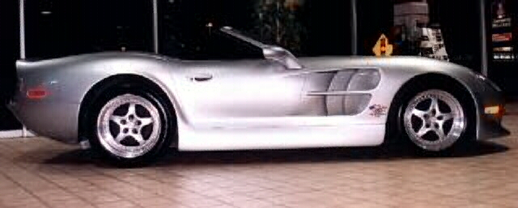
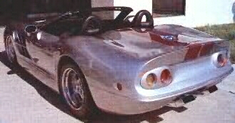

Shelby Series One

(All specs strait from Shelby)
Specs
Price |
$108,000 |
Top Speed |
171mph(claimed) |
Acceleration |
|
Engine |
|
0-30mph |
1.8sec |
Type |
V8, 32valve DOHC |
0-60mph |
4.4sec |
Displacement |
4.0L(3995cc) |
0-100 |
11.0sec |
Power |
320hp@6500rpm |
1/4 mile |
12.8sec/109.9mph |
Torque |
290 lbs-ft@5000rpm |
Weight |
2,650 lbs |
Handling |
|
Gas mileage |
|
Skidpad |
1.00g |
City |
16mpg |
600ft slalom |
67.0mph |
Highway |
27mpg |
Powertrain |
Front engined, rear wheel drive, 6 speed manual |
(? = incomplete data or unverified info, N/A = info Not Available)
Beyond the specs:
Carroll Shelby, that old man famous for the amazing Shelby Cobra and many Shelby modified Mustangs of yore. All of his old cars were made by minor and in some cases (like the Cobra) major modifications of current production cars. This car is the first car to ever be made completely by Carroll Shelby, chassis design, engine modification (only part from another company), and overall design. This is not the kind of car you expect from someone the age of Mr. Shelby, but when you look at all of his previous work you will understand. This car uses a modified version of the Oldsmobile Aurora V8 that has proven itself in IRL (Indy Racing League) racing. This car a very high cornering limit, but for a car that can pull 1 lateral g it must be capable of better than its reported 67mph shalom time. Especially since its has $1200 Formula 1 level shocks and a perfect 50/50 (front/rear %) weight distribution. This car was intended to weigh only 2450lbs but came out at 200lbs heavier, but that is still a pretty light weight. This car is faster than a Chevy Corvette and can even challenge a Dodge Viper, all despite only having a normally aspirated 4-liter V8. Due to the cost of development, it does not have ABS, but anti-lock brakes are not good on a race tack anyway. This car is $108,000 Carroll Shelby masterpiece guaranteed to go down in history just like the famous Cobra. If you want a modern classic that can challenge a Viper while supplying a better ride and out cornering any thing short of a Viper, then get in line. However, you had better hurry for only 500 hundred of these neoclassical wonders will be made.
~Oracle